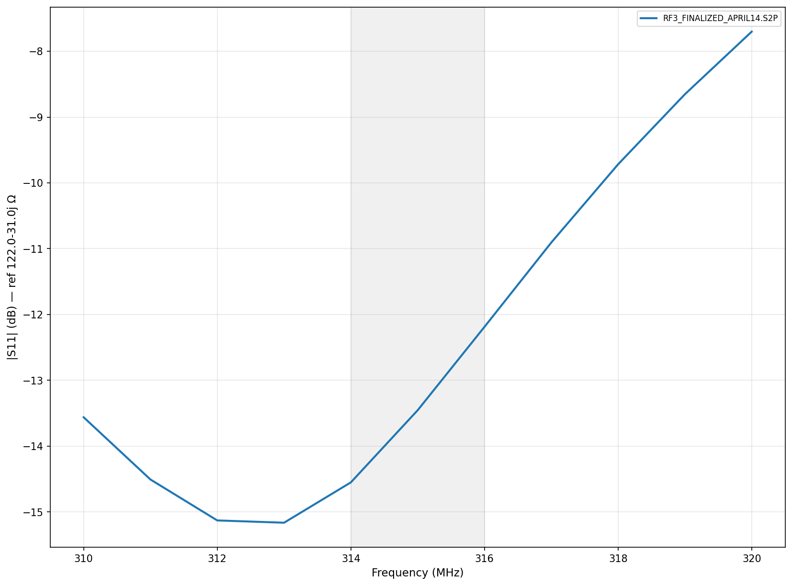
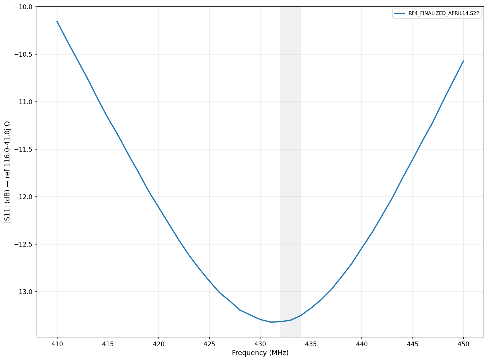
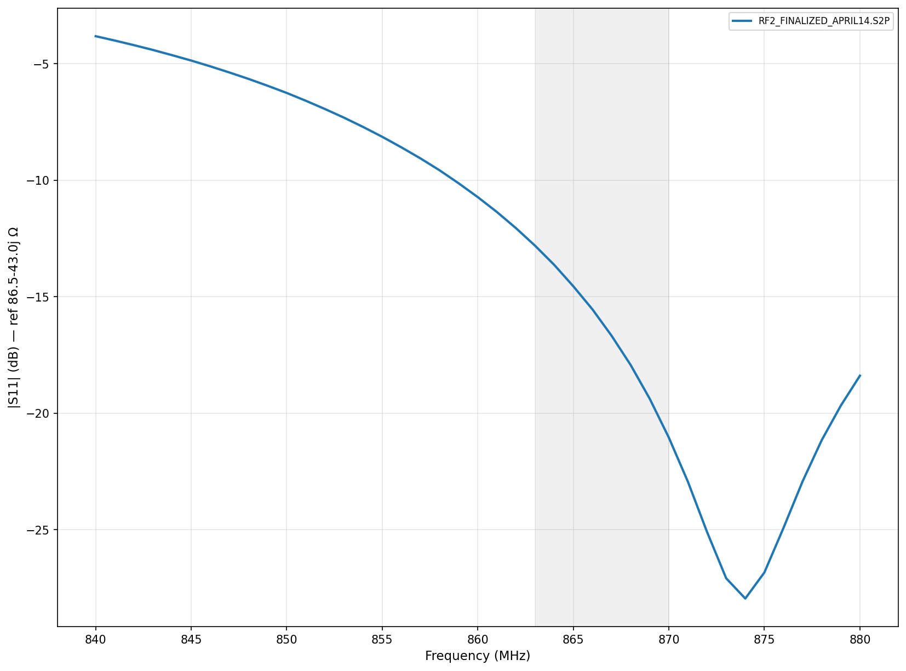
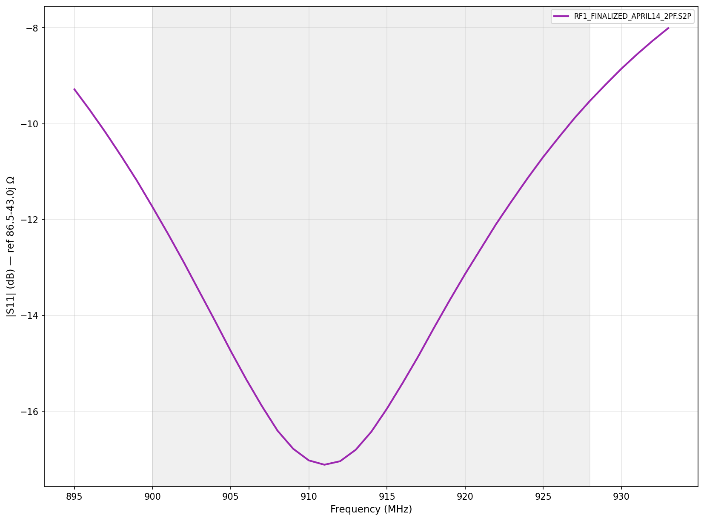

Four ISM bands, two antennas, one transceiver.
KickR Design asked MRS to deliver production-ready matching networks for a sub-GHz multi-band RF transceiver built around the TI CC1101RGPR. The board supports four ISM bands routed through an SP4T switch to two chip antennas: a narrowband Yageo ANT1204F002R0315A for 315 MHz, and a multi-band Abracon ACR1504I3 for 433, 868, and 915 MHz.
Each band needed a matching network such that |S₁₁| ≤ −10 dB across the
required operational range, measured in-case with the display installed — the closest
metallic object to the antennas and, therefore, the largest source of detuning. Deliverables
were the four matching designs with component values keyed to the production schematic.
The signal chain — and why the antennas couple.
The CC1101's differential RF port is driven through an Anaren B0310J50100AHF balun into a SKY13414-485LF SP4T switch, which selects one of four per-band matching networks. Only one band is active at a time; the switch common port references 50 Ω post-balun.
Both antennas sit in the same corner of the PCB, which measurably couples them: tuning one band shifts the response of another. That coupling drove the retune order described in the next section.
Three calibration strategies. The third one worked.
Three approaches were attempted before the efficient one took hold:
- Analytic PCB model. A simple delay + attenuation model of the trace from the balun to the matching network. Fast, but could not converge without capturing the balun and switch — the first-pass match for RF4 was the only one it produced cleanly.
- Full Short / Open / Load calibration. Characterizing the PCB at both sides of each matching network. Highly accurate, but each band required six calibration solderings and three more components per tweak — sustainable for one band, not four, with the board's wear budget.
- Three-measurement calibration (adopted). A variation of the first approach: measure the antenna alone, then in series with a known inductor, then with an additional shunt capacitor. Those three measurements extract delay and attenuation for the simple model, after which 2–3 component iterations center each band. Total: about six solderings per band, a 2× reduction over the full SOL approach.
The retune order was driven by coupling: RF3 (315 MHz) was tuned first because shifts there propagated to the other three bands through the shared antenna geometry. RF4, RF2, and RF1 were then remeasured, tweaked, and finalized in sequence.
Final results — all four bands.
Measurements taken in-case with the display installed. Each chart references the chip's target differential impedance (not 50 Ω), so the −10 dB threshold corresponds to the conjugate match CC1101 datasheets specify.
315 MHz Band
314–316 MHz · FCC Part 15 ✓ Pass
- Antenna
- Yageo ANT1204F002R0315A
- Required BW
- 2 MHz
- Target impedance
- 122 + j31 Ω
- Matching topology
- 51 nH series · 7 pF shunt
- Board refdes
X1 = 51 nH, X4 = 7 pF- Result (in-band)
- −14 to −15 dB
Note. Band was retuned first because 315 MHz affects the others through antenna coupling. In-case, in-spec.
433 MHz Band
432–434 MHz · Region 1 ISM ✓ Pass
- Antenna
- Abracon ACR1504I3
- Required BW
- 1.74 MHz
- Target impedance
- 116 + j41 Ω
- Matching topology
- 20 nH series · 0.5 pF shunt
- Board refdes
X19 = 20 nH, X23 = 0.5 pF- Result (in-band)
- −13.3 dB (min)
Note. Relative to 866 MHz (≈2×), the same topology scales cleanly. No final tweak required after the 315 MHz retune.
868 MHz Band
863–870 MHz · ETSI EN 300 220 ✓ Pass
- Antenna
- Abracon ACR1504I3
- Required BW
- 7 MHz
- Target impedance
- 86 + j43 Ω
- Matching topology
- 4 pF shunt · 15 nH series · 1.0 pF shunt
- Board refdes
X10 = 4 pF, X7 = 15 nH, X11 = 1.0 pF- Result (in-band)
- −15 dB or better
Note. Hardest match of the four. L-section wasn't enough; added a shunt cap to move the resonance into band.
915 MHz Band
900–928 MHz · FCC Part 15.247 ✓ Pass
- Antenna
- Abracon ACR1504I3
- Required BW
- 26 MHz
- Target impedance
- 86 + j43 Ω
- Matching topology
- 2 pF shunt · 15 nH series · 0.2 pF shunt
- Board refdes
X16 = 2 pF, X13 = 15 nH, X17 = 0.2 pF- Result (in-band)
- −17 dB at 911 MHz
Note. Widest fractional bandwidth. Centered the resonance on the band after adjusting the input shunt down to 2 pF.
Recommendations for production.
- Verify on a second board. A separate fabrication run confirms the solution transfers — PCB-to-PCB variation in the balun, switch, and trace geometry is small but non-zero.
- Avoid 5 %-tolerance components. The tighter matches (RF2, RF1) rely on component values within 1–2 % of the tuned set; 5 %-tolerance parts risk drifting the resonance out of band.
Important notes & disclaimers
- Results apply to the as-measured PCB with the display installed. Changes to enclosure material, nearby metal, or antenna placement may require retuning.
- Published with KickR Design's written permission. Schematic reference designators (X16, X13, etc.) match the board revision current at the time of work.
- Outcome is specific to this engagement; past results do not guarantee identical outcomes on other designs.
Bring us your spec — we'll tell you what's possible.
30-minute scoping call, no charge. Bring a band plan, schematic, or a screenshot of whatever's not matching. We'll tell you whether a similar engagement is the right fit and what it would cost.
Book a Scoping Call →